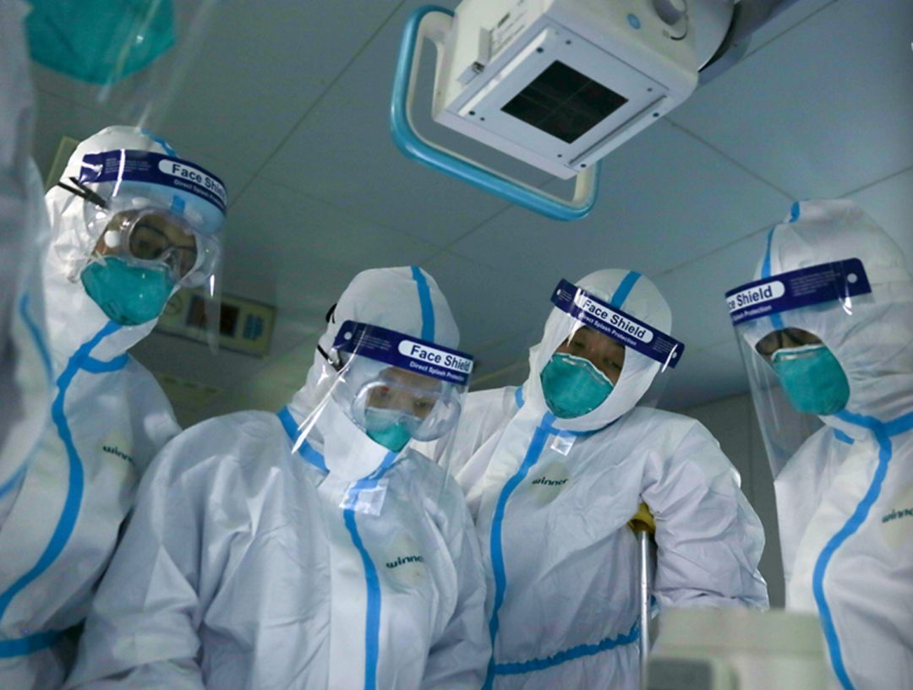
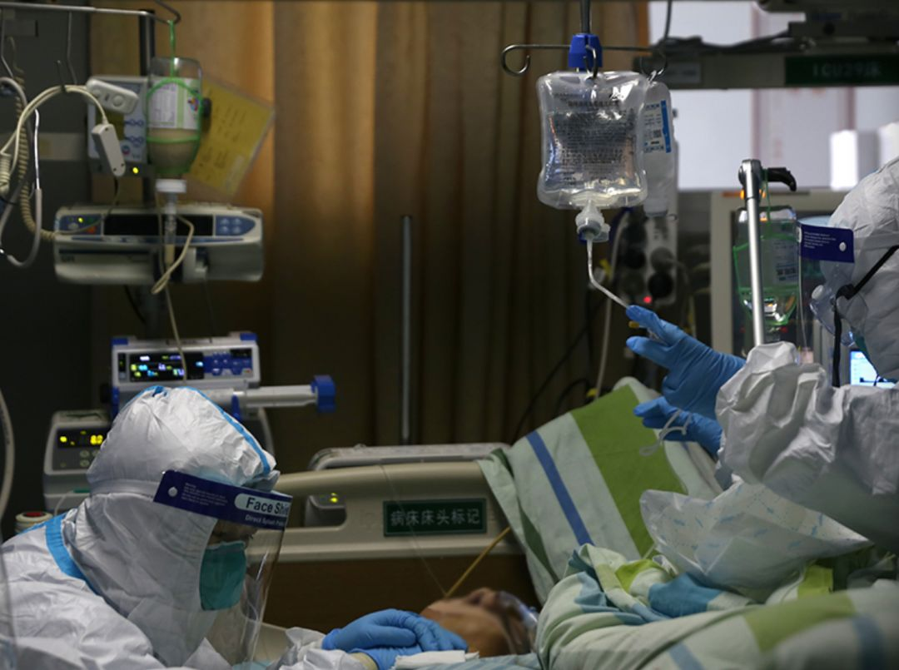

黑龙江聚集性疫情多发 齐齐哈尔市第一医院十余人病房感染
原文链接 备份链接 【财新网】（记者 王和岩）疫情袭来已遍布全国各省份。在距离武汉最北的省份黑龙江，聚集性疫情成为防控重点。截至2月6日24时，各地共报告新型冠状病毒感染的肺炎聚集性疫情48起、发病194人，波及或暴露630人，死亡3 …
澎湃新闻记者 朱莹 钟笑玫 明鹊 实习生 刘昱秀
李振东与病魔斗争了16天后终于治愈出院，他希望自己的经验能给病友提供借鉴。记者：闫海龙 魏凡 编辑：曾怡文 视频来源：澎湃新闻(04:53)
这个冬天，新冠肺炎疾风般席卷全国多地。有人感觉像得了一场感冒，有人几度呼吸衰竭、仿佛死过一回。
截至2月12日19时，全国现有44763人确诊感染新冠肺炎，累计死亡病例1115例，累计治愈出院病例4870例。
目前确诊患者中，年龄最小的是武汉出生仅30个小时的新生儿，最大的是南京97岁的女性。治愈患者中，最小的9个月大，父母从武汉到北京旅游，双双感染；最大的是湖北宜昌91岁的婆婆，治疗15天后康复出院。
每一个数字背后，是一个鲜活生命，与疾病抗衡、挣扎求生的故事。他们是父母、儿女，是市场商户、出租车司机、医护人员……靠着毅力与抵抗力，有人扛过病毒的侵蚀，呼吸到自由的气息；有人不幸倒下，留下绵延的悲痛与思念；更多的人还在坚持，等待疫情退去。

武汉大学中南医院重症医学科一病区
抵抗力下滑
1月10日，李振东开车从荆州去武汉出差参加一个会议，晚上和朋友吃饭小聚。37岁的他工作繁忙，经常出差，晚上十一二点后才入睡。
第二天回到荆州后，他感觉自己发烧了。他12日去了趟医院，体温超过了38.5摄氏度。血液报告出来后，医生给的初步判断是上呼吸道感染。
当时，新冠肺炎对于他只是匆匆略过的一则新闻。由于没有四肢乏力、咳嗽、胸闷等症状，他以为是流感，怕传染给家人，就戴上口罩，在家单独隔离在一个房间。
去公司上班他也戴着口罩，两天后，14日晚上，他出现剧烈咳嗽、胸闷的症状，去医院急诊部拍了CT。看到肺部出现阴影的报告，医生说有可能是肺结核，让他立刻转院到湖北省荆州市胸科医院进行隔离。
当时已经快夜里12点了，这家医院的值班医生详细询问了他从10日起的行程和身体情况。
这家医院不单周围医护人员装备齐全，而且他能感受到气氛特别紧张。等到走进病房，看到病床边的仪器和接受数不清的检查，他才意识到，这事严重了。
掉以轻心的不止李振东，连医护人员也没能幸免。
1月5日，医生黄虎翔在呼吸科接诊了新年后第一位发热病人，对方50多岁，肺部有病灶。那时他还不知道新冠病毒，以为是普通的病毒性肺炎。
1月15日左右，他所在的湖北黄冈市中心医院被设为定点医院，病人一天天增多。黄冈市疾控中心来采样。之后，呼吸科的医生开始戴N95口罩，穿一次性手术衣。
他后来回想，那段时间病患多，可能不小心接触到感染患者，又经常加班，抵抗力也下降了。在黄虎翔感染之前，他科室里24个医护人员中，已有两个护士一个医生被感染。
武汉大学中南医院急救中心护士郭琴是医院里第一个感染的医护人员。
去年12月底，郭琴就知道武汉发现了不明原因肺炎。没几天，医院也下发了通知，对发热病人有一套专门的就诊流程，要给患者发口罩、登记信息。
1月初开始，到医院就诊的发热病人越来越多，医院在急诊病房里改造出一个隔离病房，专门收治有新冠肺炎症状的病人。15张病床很快住满，还加了两三张床。
那时也正是流感、心脑疾病高发期。1月6日，医院里来了位50多岁的重症患者，郭琴参与了紧急抢救。之后一周，她又接触到四五位后来被确诊的患者。那阵子，她每天工作十几个小时，只能睡四五个小时，她感觉很疲惫，“抵抗力可能不够”。
郭琴所在的急救中心有48名护士，隔离病房有10位，采取“三班倒”模式，2人一组，每5天上一次夜班。一个人有时要照顾6位重症患者，帮忙抢救、抽血、转运、基础护理、观察病情等，免不了与病人有密切接触。虽然大家都穿防护服、戴医用外科口罩、圆帽，感染风险却一直都在。
1月12日，郭琴出现畏寒、发热症状，服用了抗病毒药，当晚她自己睡一间房，没再跟家人接触。第二天，烧到39度的她住进了平时自己看护的病房，进行隔离观察。

医生们胸片室，结合影像学资料，讨论每一位患者的病情。
人生中至暗时刻
当时没有通过核酸试剂确诊，医生凭CT判断李振东得了新冠肺炎。“医院可能是为了减轻我的压力，一直跟我说是疑似，实际上我是属于危重症了。”15日下午，他确认要被隔离的时候，妻子担心得哭了。
当时湖北荆州市仅有一例确诊病例，患者是华南海鲜城的搬运工。李振东进隔离病房时，第一例已经恢复得差不多了。医护人员也会主动跟他讲第一例的情况，一直安慰他说“能治好，没问题，不要担心”。这让他提振了信心。
他住院的第二天，从早上8点到晚上12点，一刻不停地在打针、吃药、做检查。
除了拍胸片，做CT、彩超之外，他早中晚各抽一管血，抽到两个手臂上找不到一块好地方。医生采样化验，还需要他咳痰，但是有些新冠肺炎的病人没有痰，只能干咳。“咳得人撕心裂肺，有时咳出来血，看得我心里直发麻。”李振东回忆。
为了补充体力，李振东每次抽完血就逼自己喝下半瓶牛奶。有时候他边咳血边喝，把咳的血一起咽下去。
新冠病毒肺炎没有特效药物，住院后只能按照《湖北省治疗指南》，每天打抗生素、抗病毒、丙种球蛋白的吊瓶和医生开的中药，黄虎翔说。
16日晚上，他一直咳嗽，吃了平喘、控制病情的药物，做了雾化，打了针，呼吸顺畅了些。护士让他服下了安定片，调了心电监测仪的音量，关上灯让他休息片刻。
这天半夜，他自称经历了人生中非常黑暗和恐怖的时刻，因为他的先天性哮喘同时发作了。“人是迷糊的，高烧已经不知道多少度了，咳嗽得厉害，哮喘又让我无法呼吸。我感觉自己开始说胡话，意识也慢慢开始在丢失。”
护士听到他的呻吟声进来，但他已经没力气说话。护士给他测了体温，38.6度。他恍惚中听到护士说，先喝温水观察体温，他不想喝，拒绝了。再次测温已攀升至39.1度，护士说要喂药，希望能退烧，但他不喜欢出汗的感觉，又拒绝了。
那几天，李振东仍然处于病发高峰期，天天高烧咳嗽，只能靠着毅力抗。他说，能感觉自己的身体器官都开始衰竭了，连把痰吐出来的力气都没有，“我不是个脆弱的人，但那几天我眼泪不知不觉就流下来了。崩溃的时候，我对医院也有一点排斥，为什么每天输液、吃药，情况还是没有好转。”
令李振东感动的是，尽管他咳嗽不止，对治疗排斥，医护人员还是冒着感染的风险，不厌其烦地为他补给热水，端屎端尿。“我每天要喝大概一热水瓶的开水，保温杯里的水喝完了，我叫一声，护士就会帮我去接满。”
记得住院第一晚，郭琴彻夜失眠，耳边回响着治疗推车走动的声音、监护仪器的响声、护士急匆匆的脚步声。平时搭档的徒弟当晚值夜班，说“你睡不着，我晚上来看看你”，几次进来看她。那一晚她打了五六瓶抗病毒、抗菌的点滴。
这让郭琴想起了以前值夜班的日子，一晚上会到每个病人的床边观察他们呼吸顺不顺畅、睡得怎么样。有的婆婆要喝水、上厕所，也要帮忙脱裤子、搀扶，甚至抱着。

中南医院医护人员在护理患者。
“身体和病毒赛跑”、“精神胜利”
黄虎翔在医院住了15天，最严重的几天发烧到37.5度，全身痛，没有力气，不想动，但意识是清醒的。
他住院的第三四天，以前看的一个哮喘病人听说了他生病的消息，就给他的朋友圈留言祈祷，这让他得到了慰藉。
有人辗转咨询他新冠肺炎的治疗和康复状况，他但凡状态好些就会及时回复，“他们不了解这个病，出现一些症状，就如惊弓之鸟，害怕感染上了会死。所以还是需要普及知识和心理疏导。”
56岁的刘娟（化名）和丈夫在江岸区西马路市场有三个摊位卖蔬菜，那里离华南海鲜市场四五公里远。一年中就过年休息一周。
对她来说，被确诊为新冠肺炎后，收治在武汉市第五医院和金银潭医院的前三天是最难熬的，“这个病真是狠哦。浑身上下没有劲，又痛，呼吸困难，那真是难受啊。”
刚知道自己得新冠肺炎的时候，她还不知道怕。后来她看到手机上的新闻，才知道疫情严峻，晚上怕得睡不着，病房里经常传来病人呼哧呼哧的喘气声、咳嗽声，甚至哭泣声，“把我吓死了”。
住院前几天人昏昏迷迷的，身上疼得没胃口，她感觉吃什么都是苦的。1月23日，管床医生给她丈夫打电话，说这个病只能提高人的免疫力，让身体和病毒赛跑，“你老婆不吃不喝怎么办，你跟她说一声，要吃，这个病就是要有营养，你没有抵抗力怎么能战胜病魔呢？”
丈夫就每天中午骑着电动车，给她送稀饭、青菜、汤、牛奶、草莓，让保安递进来。她觉得苦吃不下，丈夫就在稀饭里加糖。
等她慢慢能用手机后，丈夫、孩子、亲戚们每天打电话鼓励她，“你一定会好的”，“你要活着，就要加油啊，要拼命地吃”。她就逼着自己吃。27日开始，身上的疼痛好些了，送来的饭基本可以吃完。
邻床一个82岁的婆婆无法自理，刘娟能下床后，经常帮婆婆开盖子、倒水、照顾她。婆婆很感动，说“没有你，我饿都饿不行了”，想认她做干女儿，后来婆婆先她一天出院。
住院的三天里，同事们每天发消息问郭琴状况怎么样，安慰她“不要担心，会好的”。有的同事一停下来，就进来看她，逗逗她。有的给她带早餐、送书、送花，花没办法拿进病房，就拍照片发给她看，鼓励她加油。郭琴说，“当时感觉特别暖心，还偷偷哭了。”
而李振东则会用手机听点音频节目，听听老歌。最崩溃时听了阿杜的《坚持到底》，这给了他些许力量。“咳得很凶的时候一定要用意志力控制住，否则容易窒息昏迷。我一般是压住咳嗽后慢慢放松身体，控制呼吸。”
病毒是欺软怕硬的。1月23日开始，李振东连日的高烧退了下去，24日他开始进入“恢复阶段”，咳嗽好了很多，精神也在慢慢恢复。他还托朋友买了些物资捐给一线的医务工作者。
直到恢复一些了，他才联系家人，却只字不提病危的经历。他怕自己喘气不顺或者状况突变，只录些自己的视频发给家人，不敢与他们视频即时通话。他母亲在这段时间还做饭送来医院，放在一个地方，医护人员帮他拿去。他吃不下饭，就拿汤泡饭，多少吞下去一点。
他坐在病床上，喘着气断断续续录了些视频讲述自己的康复过程，他希望能够通过自己现身说法宽慰一些正在患病或者身处恐惧中的人。

医护人员采用在人体外安放人工膜肺来替代肺的工作，让患者自身肺得到充分治疗和休息。
出院恢复期
停药后留院观察了几天，李振东在两次核酸检测呈阴性后的1月31日出院了。医生告诉他，短期内会有抗体，但免疫系统被破坏后身体比较虚弱，也会有可能二次感染，让他在家里隔离一段时间，其间需要清淡饮食、少食多餐。
出院第二天，他有种“麻药醒了”的感觉，内部器官一直在痛。这天晚上，他一度发烧到38.2度。妻子打电话给医生，主治医生说出院后停药，身体有段适应期。当时已经晚上快九点，医院药房已经关门了，主治医生还跑了一趟帮他拿药。吃完退烧药、止痛药后，第三天早上，他才退烧了，人也恢复过来。
2月3日下午，也就是住院17天后，刘娟也出院了。一个护士说“阿姨，你今天出院，恭喜你”，她很感激地说，“是你们给了我第二次生命，我很感谢你们，不是你们，我哪有今天呢？”
医生没给她开药，只嘱咐她回家后要休养，在家隔离14天。上楼的时候，感觉有点吃力，喘气，不过比在医院的时候要好一些，饭量也大了。她在家也戴着口罩，与丈夫保持距离，碗筷分开。
2月7日，国家卫健委医政医管局监察专员郭燕红表示，从1月30日以后治愈患者增幅在不断加大，根据近日卫健委组织专家对500多个出院患者的病例和诊疗情况分析结果来看，其中既有轻症，也有重症，500多例治愈患者的平均住院时间是10天左右。
对于四千多位治愈者来说，一个萦绕心头的问题是：会否二次感染或留下后遗症？中日友好医院专家詹庆元给出的答案是：从一般的病毒感染规律来看，感染后都会产生抗体，有的抗体可能持续时间不长，患者治愈后有再感染的风险，应加强防护，防治感冒，在家适当活动。从临床经验来看，轻症患者没有后遗症；重症患者一段时间内可能有肺纤维化等遗留情况，大部分最后可以修复；极少数急重患者可能在较长的时间内留一点肺纤维化，需加强后期随访。
郭琴出院后隔离14天就重回了疫情一线。最初两天她帮忙做些医嘱、治疗的工作，但科室人员不够，她在第三天就恢复跟往常一样护理危重病人。她住在医院附近的房子里，丈夫隔两天去看她一次。重回岗位有风险，但郭琴更“希望以一个治愈患者的身份告诉大家：不要恐慌，要相信医护人员。”

感染新冠肺炎痊愈后返岗的护士郭琴。 受访者供图
隔离时黄虎翔经常看疫情消息。1月22日左右，他熟悉的医院医护人员都上了一线，当时还有山东、湖南的医疗队，一共有一千多人，有些人一个多月没回过一次家。
他也想帮忙，尽一份自己的力。同事把片子发给他，让他帮忙看病历，做远程会诊，“有一次看到了一个怀孕25周的孕妇患者，这种病人用药需要非常小心，好在后来听说恢复得不错。”
这段时间，他7岁多的孩子好像突然间长大了，明白当医生的爸爸妈妈不能陪她过年是为什么。
2月1日出院那天，阳光明媚。黄虎翔洗了澡，换了衣服，戴上口罩，之后联系社区的出租车，把他送到岳母的空房里，一个人隔离。之前一年只休七天，他说还从未休过如此漫长的假期。他给治愈者在家康复的建议是，“尽量不出门，保持室内空气流通，出去一定要戴口罩，要多洗手，很关键。在家里要运动，注意休息，不要熬夜，增加免疫力。”
2月12日，结束隔离的他回归医院，与同事在抗疫一线并肩作战。
跟黄虎翔同天出院的李振东现在每天晚上差不多八点半睡，早上六点左右醒。醒来后，他会在房间做做舒展动作。长期不动，腿部、手臂感觉都有点肌肉萎缩了，有时候会抽筋。下午基本上是午休、听音乐、看书、看电视。
这段时间他每天都要跟孩子视频，孩子会问爸爸怎么还不回来。他就说爸爸生病了，还在恢复，好了就回来。
有了此番经历，他陡然觉得这个世界很美好，自己和身边的人也很幸运，因为身边接触的人目前没有一例感染。过去，他常常由于工作疏于陪伴家人，这次他与新冠肺炎“正面肉搏”，多少让家人担惊受怕，他说病愈之后更珍惜与他们相处的时刻。
戳这里进入
“全国新型冠状病毒感染病例实时地图”↓↓↓

本期编辑 周玉华
推荐阅读


原文链接 备份链接 【财新网】（记者 王和岩）疫情袭来已遍布全国各省份。在距离武汉最北的省份黑龙江，聚集性疫情成为防控重点。截至2月6日24时，各地共报告新型冠状病毒感染的肺炎聚集性疫情48起、发病194人，波及或暴露630人，死亡3 …
原文链接 备份链接 司机停下车来思忖着说，怎么给导到这里来了？ 那是一条土路，树在旁边矗立着。春天还没到来，它的叶子还没长出来。 “前方800米左转，500米后再左转”，导航里的声音软糯着。 金银潭医院是此次行程的目的地。这是武汉市最大的 …
原文链接 备份链接 记者/ 魏晓涵 梁婷 韩谦 佟晓宇 实习记者/ 陈威敬 胡琪琛 编辑/杨宝璐 宋建华 医护人员严阵以待 摄影/高瞾 2019年12月30日，武汉市卫计委内部文件流出，称“武汉出现不明原因的肺炎”，与华南海鲜批发市场有 …
原文链接 备份链接 随州市中心医院肿瘤科科长称，“现在肿瘤科的医疗全部都停了，我们科也开始做一线防控，人太少，没办法。” 全文1030字，阅读约需2分钟 随州癌症患者家属反映，随州及武汉多家医院肿瘤科室因疫情被改造，患者化疗被耽误。 …
原文链接 备份链接 根据丁香医生实时数据，截至 2020 年 2 月 9 日 18 时，全国累计确诊病例 37286 例，疑似病例 28942 例，新增确诊病例 2692 例，新增疑似病例 3916 例。其中，重症病例 6188 例，死亡 …